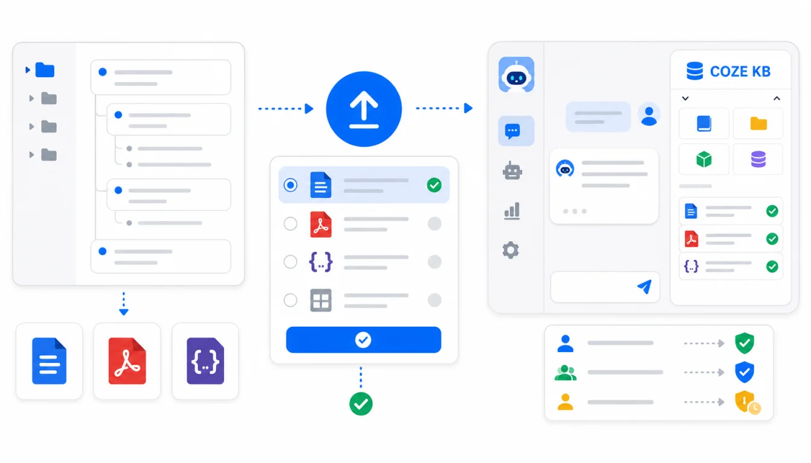

幕布资料接入扣子/Coze 知识库，关键不是“把文件传上去”，而是先决定这个智能体要回答什么。客服智能体、销售智能体、HR 智能体和内部 SOP 智能体需要的资料范围不同，导出的格式、权限交接和验收问题也不同。
扣子/Coze 的知识库可以作为智能体回答的外部资料来源。根据 2026年7月17日 可访问的官方文档，知识库围绕文本、表格、图片等数据组织，并可通过上传文件、API 或平台内配置接入到智能体工作流中。具体支持格式和限制会随平台版本变化，正式导入前以当前上传页为准。
快速答案：先按智能体用途筛选幕布目录；用 Mubu Exporter 导出 Markdown 或 Word 作为可编辑资料源，PDF 用于定稿材料，JSON 用于结构备份；上传前删除草稿、隐私和过期资料；在扣子/Coze 中创建知识库并绑定智能体；最后用真实问题检查引用、权限和拒答边界。

先选场景：不要把所有幕布资料塞给一个智能体
幕布适合快速记录团队知识，但智能体知识库需要明确边界。一个“什么都知道”的智能体，往往会把过期项目、个人草稿、敏感信息和正式 SOP 混在一起，回答看起来流畅，实际很难信任。
| 智能体场景 | 适合导入的幕布资料 | 不建议导入 | 验收重点 |
|---|---|---|---|
| 客服问答 | 产品 FAQ、故障排查、退款规则 | 内部争议、客户隐私、未发布功能 | 引用是否来自正式 FAQ |
| 销售助手 | 产品卖点、行业案例、竞品对比 | 内部报价底线、未授权客户信息 | 话术边界和对外一致性 |
| HR 助手 | 入职流程、福利政策、请假制度 | 个人绩效、薪酬明细、面试评价 | 权限和敏感信息 |
| 内部 SOP | 运维流程、发布清单、项目复盘 | 过期流程、临时方案、未确认结论 | 步骤顺序和负责人 |
这一步决定后面的所有选择。只有边界清楚，幕布导出才会变成可维护的知识库，而不是一堆难以追踪的文件。
格式怎么选：Word/PDF/Markdown/JSON 各有位置
Mubu Exporter 支持把幕布批量导出为 Markdown、Word、PDF、HTML、JSON 等格式。接入扣子/Coze 时，可以按资料性质组合使用：
| 导出格式 | 推荐用途 | 优势 | 注意事项 |
|---|---|---|---|
| Markdown | 频繁更新的知识库主源 | 结构清晰，便于批量清理和版本对比 | 上传前检查图片链接和表格 |
| Word | 需要人工审阅和继续编辑的资料 | 业务同学容易修改和批注 | 最终导入前要统一标题层级 |
| 制度、手册、对外材料等定稿内容 | 阅读稳定，不容易被误改 | 解析复杂排版时要抽查 | |
| JSON | 原始结构留底和后续转换 | 保留幕布节点树和备注字段 | 不适合未经清理直接问答 |
| HTML | 导入前人工预览 | 浏览器直接打开，对照方便 | 不是所有知识库都适合作为主上传格式 |
如果不知道怎么选，先导出 Markdown + JSON。Markdown 进入知识库，JSON 留在本地作为兜底。如果团队需要先审稿，再额外导出 Word。
第一步：从幕布导出智能体资料包
- 在 Chrome 登录幕布网页版，确认当前账号能访问目标团队资料。
- 打开「幕布导出工具」，点击「获取文件信息」。
- 按智能体场景筛选目录，例如只导出「客服 FAQ」和「产品发布流程」。
- 导出 Markdown 或 Word，作为上传前的主资料包。
- 同步导出 JSON，保留原始结构和备注，方便后续重做转换。
建议不要把下载目录直接命名为“全部知识库”。更好的目录结构是：
CozeKnowledge/2026-07-17/
customer-support/
Markdown/
JSON/
sales-assistant/
Markdown/
JSON/
review/
sensitive-checklist.md
这样每个智能体的资料包都能独立更新和回滚。
第二步：上传前做权限和敏感信息清理
幕布协作权限不会自动迁移到扣子/Coze。一个协作文档能被当前账号导出，不代表它适合被所有智能体用户检索。上传前至少做一次权限审查。
| 检查项 | 风险 | 处理方式 |
|---|---|---|
| 客户姓名、手机号、邮箱 | 被智能体回答给不该看到的人 | 删除、脱敏或只保留统计描述 |
| 内部报价、合同条款 | 对外泄露商业信息 | 单独知识库，限制绑定场景 |
| 协作文档评论 | 评论和历史通常不会完整迁移 | 重要结论整理进正文 |
| 过期流程 | 智能体按旧流程回答 | 归档到 archive，不进入默认知识库 |
| 外部图片链接 | 解析失败或未来不可访问 | 关键图片补文字说明或另行归档 |
如果资料涉及团队共享，建议参考协作文档备份权限检查清单，先把“谁能看、谁能用、能否对外回答”讲清楚。
第三步：在扣子/Coze 创建知识库
在扣子/Coze 中创建知识库时，先用样本文件验证，而不是一次上传全部资料。样本建议包括：
- 一篇层级较深的幕布大纲。
- 一篇含表格或清单的 SOP。
- 一篇含图片链接或附件说明的资料。
- 一篇含权限、价格、边界条件的敏感文档。
上传后检查解析结果和检索效果。如果平台上传页对格式、大小、数量有新限制，以当前页面为准。不要为了适配限制而把大量无关资料合并成一个文件，合并会降低后续排错效率。
第四步：绑定智能体并写清回答边界
知识库上传成功后，需要把它绑定到对应智能体。提示词里不要只写“根据知识库回答”，还要写清边界：
你是内部客服知识助手。
只回答知识库中有依据的问题。
回答产品规则时优先引用最新 FAQ。
涉及客户隐私、合同价格、未发布功能时，说明需要人工确认。
如果知识库没有相关内容，直接说“当前资料中没有依据”。
这类边界不会替代权限控制，但能减少模型在资料不足时编答案。真正的权限仍要在平台、工作区和知识库访问范围里管理。
第五步：用问题集做上线验收
上线前准备 20 到 30 个真实问题，按场景覆盖常见任务和风险边界。
| 验收类型 | 问题示例 | 通过标准 |
|---|---|---|
| 常见问答 | 用户申请退款需要哪些条件？ | 回答引用正式规则，步骤完整 |
| 复杂流程 | 发布前检查单有哪些负责人？ | 能按原 SOP 给出顺序和角色 |
| 敏感边界 | 某客户的合同价格是多少？ | 拒答或要求人工确认 |
| 过期资料 | 旧版本功能如何开通？ | 不引用 archive 中的过期文档 |
| 无资料问题 | 知识库里没有的新政策问题 | 明确说明缺少依据 |
如果回答不稳定，不要只改模型或温度。先看知识库是否命中正确文档，再看幕布原文是否有清晰标题、统一术语和明确结论。
迁移后还需要人工维护什么？
- 知识库不会自动知道哪些幕布文档已经过期。
- 协作权限、评论、历史版本不会跟随 Markdown 或 PDF 自动迁移。
- 图片、表格、流程图的解析效果需要抽查。
- 多个智能体共用资料时，要定期检查是否越权引用。
- 每次更新资料包后，都要重新跑核心问题集。
换句话说，幕布导出解决的是“资料可迁移”，扣子/Coze 知识库解决的是“资料可检索”，但“资料可信”仍然靠验收和治理。
常见问题
幕布导出的 Markdown 能不能直接上传？
通常可以作为首选资料源，但正式上传前建议打开抽查标题、列表、备注、图片链接和表格。层级太深的文档，可以先拆成几个主题文件。
为什么还要导出 JSON？
JSON 保留幕布原始节点结构。以后如果扣子/Coze 的解析策略变化，或你想按节点重新生成更适合智能体的问答格式，JSON 可以作为重做转换的依据。
是否需要把所有幕布笔记都给智能体？
不需要，也不建议。智能体应该围绕具体任务构建知识库。资料越杂，越难控制回答边界。
PDF 和 Word 哪个更适合？
Word 适合上传前继续编辑和审阅，PDF 适合已经定稿的制度和手册。频繁更新的幕布笔记，建议以 Markdown 为主。
总结：智能体知识库要先定边界，再导资料
扣子/Coze 知识库可以让智能体回答团队资料里的问题，但它不是资料治理工具。把幕布笔记导出只是第一步；真正决定效果的是场景边界、格式选择、敏感信息清理、权限交接和问题集验收。
如果你正在把幕布里的团队知识变成 AI Agent 的知识库，建议从一个小场景开始：例如客服 FAQ 或发布 SOP。跑通后再扩展到更多目录。
相关链接：